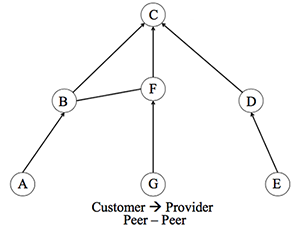

For each paper, by 11:59PM the evening before lecture:
Read Chapters 1, 2, and 5 from [SampleRate]. Answer the following two questions:
(1) Assume that two clients are connected to the same access point, would
SampleRate make the two clients achieve the same rate on average? Answer
yes or no and explain your answer using a sentence or two.
(2) Under some conditions, SampleRate does not perform too well. State
one such condition and explain why its performance is sub-optimal.
Answer True OR False, and provide a 1-setence justification for each.
(1) Consider a wireless channel that is frequency selective, i.e., different frequencies experience different attenuation and phase rotation. In this case, a scheme like 802.11b, which does not divide the bandwidth into sub-carriers but rather transmit each bit over the whole bandwidth is better than a scheme like OFDM which divides the bandwidth into sub-carriers and transmits different bits on different sub-carriers.
(2) Channel that suffer from more multipath requires a longer OFDM cyclic prefix than channels that do not suffer from multipath (e.g., line of sight channels).
(3) One of the benefits of OFDM is that the receiver does not need to correct for carrier frequency offset (CFO)
(4) With OFDM, the transmitter can use a different modulation scheme (i.e., BPSK, 4QAM or 16QAM) for different OFDM sub-carriers.
Read the ZigZag paper and answer the following questions.
(1) What is the "hidden terminal" problem? Why does it arise even when
carrier sense is used?
(2) Why is a random wait before retransmission in the 802.11 MAC protocol
important for the success of the ZigZag idea?
(3) Does ZigZag as described in the paper achieve its intended goals when
different nodes pick different bit rates of transmission?
Provide a short answer for each of the following questions:
(1) How does the number of antenna in the array affects your ability to localize (i.e., why do we need an array)?
(2) How does array track deal with multipath?
(3) List two disadvantages of ArrayTrack.
Provide a short answer for each of the following questions:
(1) In WiTrack, how does FMCW compute the time of flight?
(2) In WiTrack, what is the difference between static and dynamic multipath?
(3) List 2 advantages and 2 disadvantages for WiTrack over ArrayTrack.
Please read the vital radio paper and answer the following questions:
(1) Last lecture we learned that WiTrack's accuracy is about 20cm.
Further, we learned that the resolution of FMCW is C/2B, where C is the
speed of light and B is the bandwidth. VitalRdaio uses the same FMCW
radio that WiTrack uses. So how is it possible for VitalRadio to measure
movements as small as the chest inhale-exhale motion?
(2) VitalRadio can measure sub-centimeter motion. Can one use that
technique to improve trajectory resolution in WiTrack to localize a
person to within sub-centimeter accuracy? Explain your answer.
Please answer the following question:
The ETX metric accounts for the delivery ratio on the forward path and on the backward path. State one reason why the forward deliver ratio can be different from the backward delivery ratio.
Answer the following questions about MIMOs:
(1) What is the difference between MIMO diversity and MIMO multiplexing?
(2) Consider a 2-antenna WiFi access point transmitting packets to a 2-antenna receiver. Describe a scenario in which the AP achieves a higher throughput if it uses MIMO diversity (as opposed to multiplexing) to transmit to the client. Describe a scenario in which the AP achieves a higher throughput if it uses MIMO multiplexing to transmit to the client.
(3) Can a 2-antenna AP transmit 2 concurrent packets where each packet is destined to a different single antenna client? How can the clients decode without interference?
(4) Consider a scenario where all the WiFi nodes implement n+. What is the upper limit on the number of concurrent streams determined by?
Read the assigned paper and answer the following questions:
(1) Explain in two sentences the meaning of backscatter communication
(2) Compressive sensing relies on the encoded vector x being sparse.
Explain what is x in the context of Buzz and why it is expected to be sparse.
Read the Backdoor paper and answer the following questions:
(1) Alice and Ben have invited a few colleagues to an important private
meeting They are however worried that one of their colleagues may use
his cell phone to record the conversation at the meeting. Alice claims
that She and Ben can use the technique in the paper to prevent such
recording. Is Alice right? Explain your answer.
(2) List two advantages for the technique in the paper in comparison with
past work on near-ultrasound.
Answer the following questions about the full-duplex papers:
(1) In the Mobicom'10 paper, explain why the design does not work well
with wideband channels (i.e., what happens as the channel bandwidth increases)?
How is this problem addressed in the NSDI 2014 paper?
(2) Full-duplex radios should remove two types of self-interference: linear and nonlinear.
For each paper, explain how it addresses each type of intereference.
You need only to list the name of the mechanism or technique that addresses
a particular type of interference (no need for a detailed explanation)
Answer the following questions about the papers:
(1) In the StarLight paper, what are virtual shadow maps?
Briefly explain why applying the same idea for RF sensing would be much harder.
(2) If DarkLight had a larger communication range, would it support
the same applications as StarLight? Briefly justify your answer.
Answer the following questions about the papers:
(1) The congestion avoidance method in this paper increases the congestion window (cwnd) by 1/cwnd on each arriving ACK. Explain why this method increases cwnd linearly in time.
(2) This paper describes a congestion control scheme where packet losses are the only explicit signal that congestion has occurred. When a queue is full and a packet arrives at a router ("gateway"), suppose the router can drop either the arriving packet, or a packet at the very front of the queue. Which approach would you choose, and why?
(3) If a router never drops packets, what happens to the delays experienced by packets?
In the interdomain topology shown below, each node is an autonomous system (AS). Denote the set of IP addresses inside an AS X by IPx. Assume standard customer-peer-provider route filtering and ranking rules as discussed in the paper assigned. There are no other autonomous systems of interest in the following questions.

(Notice that directed edges indicate a costumer-provider relationship, and plain edges indicate a peering relationship.)
Consider AS F. From each of its neighboring autonomous systems, F receives some set of routes using BGP.
From each AS given below, for which IP addresses (in IPx notation) does F receive advertisements?
Neighbor AS
From G:
From B:
From C:
After F processes BGP advertisements received from each neighbor, F routing table entries whose next-hops are routers in a neighboring AS. For each neighboring AS given below, list the IP addresses (in IPx notation) for which that AS's router is F's next-hop.
Next-hop
G:
B:
C:
Answer the following questions about the papers:
(1) Explain briefly how VL2 leverages TCP congestion control to achieve its goals of uniform high capacity and performance isolation. What can go wrong for non-TCP traffic?
(2) VL2 uses two types of IP addresses in its architecture: location-specific (LA) and application-specific (AA) addresses. By way of analogy, which addresses in mobile IP play the same role as LA and AA addresses in VL2?
No reading questions today!
Answer the following questions about the papers:
(1) Why does continuously choosing the highest possible bitrate lead to depleting the buffer and increasing the rebuffer rates?
(2) Briefly explain how the slow-start-restart behavior of TCP impacts an ABR’s predictor.